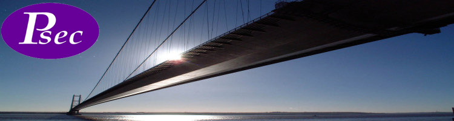

We cover senior posts and find savings.
Psec lends experienced managers to the NHS and councils, and finds revenue savings. A small firm in Northwich, established 1989.

Psec lends experienced managers to the NHS and councils, and finds revenue savings. A small firm in Northwich, established 1989.
Five questions we hear from directors of finance, chief executives and estates directors, with a straight answer to each.
Yes. Psec provides experienced interim managers at all levels, for short, medium and long term requirements. All are trained and experienced, so they can give you effective assistance from day one.
We cover Finance, Information and ICT, HR & Organisational Development, Housing, Revenues & Benefits, Estates & Facilities, and General Management. Posts we have filled include Director of Finance, Financial Controller, Director of Estates, Director of Resources, Head of Revenues, Payroll Manager and Chief Accountant.
We can check. Our software database identifies duplicate creditor payments, and incorrect salary and wages payments.
It also enables root cause analysis, so you can improve the internal controls on your payment systems.
We can tell you. A Modern Equivalent Assets valuation, using alternative sites, can reduce your balance sheet valuation, the public dividend capital (PDC) payable and depreciation, and your business rates.
We have extensive experience of dealing with the District Valuer and NHS Estates.
We will look. We review capital schemes from a VAT perspective: PFI contracts, leases, and purchases and disposals of land and buildings, to maximise your capital VAT recovery.
We do both. Consultancy covers organisational and efficiency reviews, business cases, shared services, costing and commissioning.
Project and change management covers mergers, service integration, financial recovery plans and final accounts.
“We are happy to work on either a daily rate basis or on a contingency basis, earning a percentage of the annual savings we identify - entirely at our risk.”Psec, in its own words
“In the last 12 months we have saved our clients in excess of £10m.”Psec, as stated on its current website
For an informal discussion of your requirements, ring either of us. Behind us is a team of full-time consultants and a large network of associates.
Named clients and what we did for them, grouped by the kind of organisation.
We have also worked for Warrington Borough Council, North Lincolnshire Council, Hull & East Yorkshire Hospitals NHS Trust, Shropshire CCG and the Isle of Man Government, and for charities, voluntary bodies, social enterprises and police authorities.
Psec is always pleased to receive CVs from interested candidates. Even if you are part qualified, we would still be interested to hear from you.
Email your CV